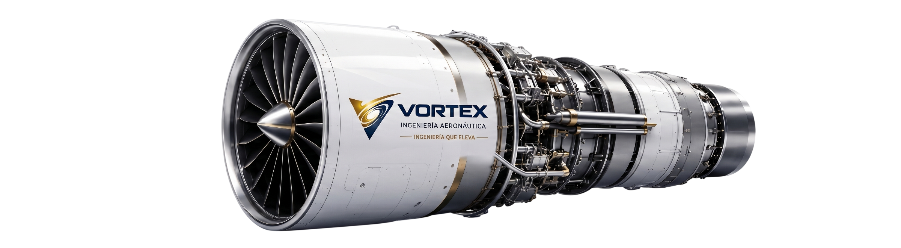

Mantenimiento MRO
Servicios de mantenimiento, reparación y revisión orientados a seguridad operacional, disponibilidad y confiabilidad de activos aeronáuticos.
VORTEX AEROSPACE ENGINEERING

Ingeniería aeronáutica, MRO y manufactura de alta precisión para operaciones críticas.
Ingeniería certificable
Integramos mantenimiento, manufactura, defensa y control técnico bajo una metodología orientada a precisión, trazabilidad y confiabilidad operacional.
Servicios de mantenimiento, reparación y revisión orientados a seguridad operacional, disponibilidad y confiabilidad de activos aeronáuticos.


Servicios de mantenimiento, reparación y revisión orientados a seguridad operacional, disponibilidad y confiabilidad de activos aeronáuticos.
Fabricación de componentes y aeroestructuras bajo criterios de tolerancia crítica, control dimensional y trazabilidad técnica.
Soporte técnico para operaciones críticas donde la confiabilidad absoluta y la documentación controlada son prioritarias.
Inspección, validación documental, mejora continua y trazabilidad para asegurar resultados verificables en cada entrega.
Confianza operacional
Años de experiencia técnica
Mantenimiento y soporte especializado
Procesos alineados a estándares aeroespaciales
Soluciones para operaciones críticas
Esencia de marca
El vórtice aeronáutico describe cómo el flujo puede ser dirigido, estabilizado y aprovechado. Para nuestra ingeniería, representa la capacidad de controlar variables críticas, estabilizar procesos y elevar el desempeño técnico.
Procesos técnicos definidos para reducir incertidumbre y asegurar trazabilidad.
Soluciones orientadas a continuidad operacional y confiabilidad verificable.
Ingeniería aplicada para elevar precisión, seguridad y eficiencia técnica.
Capacidades técnicas
Integramos ingeniería, manufactura y soporte operacional para responder a requerimientos críticos de la aviación comercial, defensa y desarrollo aeroespacial.
Servicios de mantenimiento, reparación y revisión bajo criterios de seguridad operacional y confiabilidad técnica.
Desarrollo de componentes y aeroestructuras con enfoque en tolerancias críticas, control dimensional y trazabilidad.
Capacidades técnicas orientadas a operaciones de alta exigencia, confiabilidad absoluta y documentación controlada.
Evaluación, desarrollo y mejora de soluciones técnicas para sistemas y componentes aeronáuticos especializados.
Procesos orientados a inspección, verificación, trazabilidad documental y mejora continua.
Desarrollo permanente de talento técnico para sostener una cultura de precisión, seguridad e innovación.
Operaciones críticas requieren precisión
Nuestro equipo puede evaluar necesidades de mantenimiento, manufactura o soporte especializado para operaciones aeronáuticas críticas.
Contactar a Operaciones